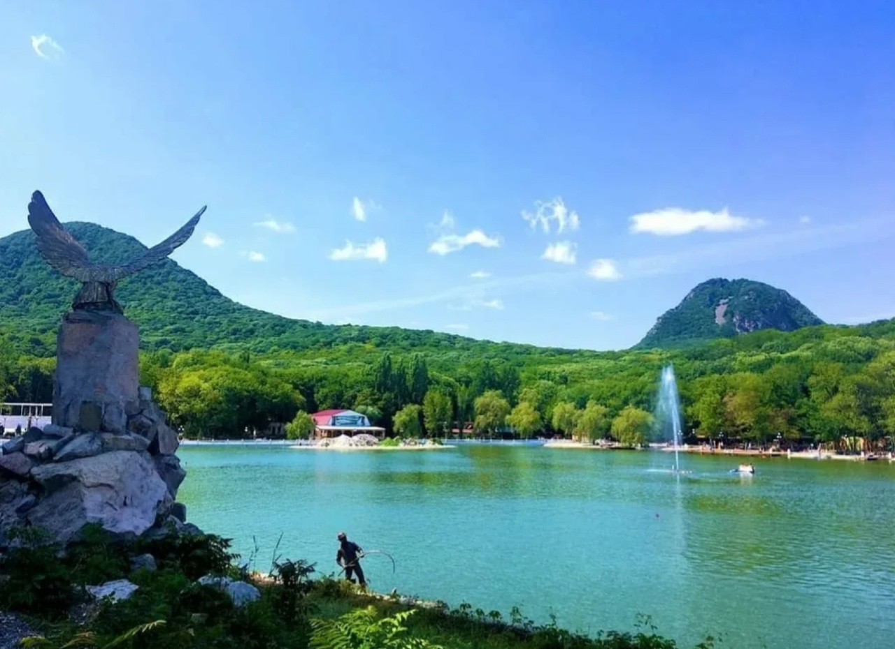

Завершение путешествия
Исполинские горы,Заповедные скалы, Вы — земные узоры, Вы — вселенной кристаллы.

Самый захватывающий маршрут по горам Кавказа
Когда так тянет к свежему горному воздуху, хочется организовать отдых в горы или уехать в путешествие на Кавказ – не отказывайте себе в удовольствии провести время активно!
Минеральные Воды — это небольшой городок в Ставропольском крае, входящий в состав одного из самых знаменитых курортных комплексов России Кавказские Минеральные Воды.
Домбай славится следующими особенностями: Уникальные ландшафты- Здесь множество горных рек и озёр, водопады, крупные ледники, сосновые и пихтовые леса. Чистота и свежесть воздуха- Насыщенный хвоей воздух Домбая считается одним из лучших горнолыжных курортов России. Разнообразие активностей- Зимой это горнолыжный отдых, а летом — походы по Тебердинскому заповеднику и прогулки на канатной дороге. Местный кавказский колорит- В Домбае есть множество заведений с блюдами национальной кухни.
Эльбрус
Исполинские горы,Заповедные скалы, Вы — земные узоры, Вы — вселенной кристаллы.

ДОБРО ПОЖАЛОВАТЬ НА ЧИЛЛУ САТУРН
Центавр A (NGC 5128) — линзовидная галактика в созвездии Центавр. Это одна из самых ярких и близких к Земле соседних галактик, расстояние до неё составляет 12 миллионов световых лет.